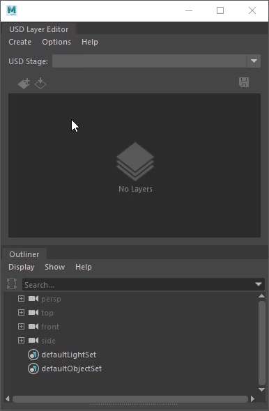

Create a USD stage with new layer
Creating a stage with a new layer lets you start with an empty USD stage and an anonynous layer. Using this empty layer and stage, you can structure your layer hierarchy using the USD Layer Editor. When new layers are created in Maya, they are empty and anonymous. You can add prims and references to any layer using the Outliner. This workflow enables the creation of USD assets within Maya.
To create a new empty USD stage with sublayers
Do one of the following:
In the USD Layer Editor, Create > Stage with New Layer (recommended)
Note: To open the USD Layer Editor, Select Windows > USD Layer Editor.Create > Universal Scene Description > Stage with New Layer
The following occurs:

In the USD Layer Editor, an anonymous root layer and a session layer are created. The new anonymous root layer is set as the target layer.
Note: The session layer is set by default to auto-hide in the USD Layer Editor. Please see Auto-Hide Session Layer to toggle the visibility of the session layer.In the Outliner, a
proxyShapetransform node named stage1 and astageShapestage node named stageShape1 are created.Tip: In the Outliner, right-clickstage1orstageShape1and select USD Layer Editor to open it.
In the USD Layer Editor, click to add a sublayer. If a layer is selected, a sublayer is added to the selected layer. If no layer is selected, a sublayer is added to the root layer. For more information see USD Layer Editor.
To rename the layer, right-click the layer and select Save As. In the file browser that appears, enter a new name for the layer. For more information, see Save edits in the USD Layer Editor.
Tip: You can save an anonymous root layer relative to your Maya scene file and sublayers relative to parent layers. To enact this, ensure you save your Maya scene file to disk. Then, under File Options select Make Path Relative to Scene File. To learn more about saving USD files relatively, see Make Path Relative.
Make Path Relative to Scene File. To learn more about saving USD files relatively, see Make Path Relative.Repeat the previous steps to continue to add and rename layers to build your layer hierarchy.
Drag and drop layers to reorder their placement. See Organize layers in the USD Layer Editor.
To add a prim or a reference to a layer, ensure that the desired layer is set as the target layer. For more information on specific steps, see Work with USD data in the Outliner.
Further editing